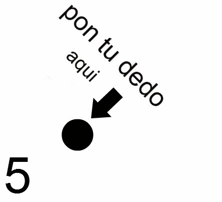

Roblox es un juego en línea en el que los jugadores son capaces de crear sus propios mundos virtuales y diseñar sus propios juegos dentro de la plataforma Roblox. Los juegos en Roblox pueden crearse utilizando una versión "sandbox" del lenguaje de programación Lua, y los creadores de juegos pueden ser pagados con ROBUX, que a su vez se puede convertir en dinero en efectivo con el sistema de DevEx (Developer Exchange). El juego está diseñado para ser familiar y puede ser jugado en múltiples plataformas, incluyendo Android, iOS, Xbox, PC y Oculus Rift. A partir de otoño de 2016 Roblox tiene más de 500.000 creadores de juegos, y más de 30 millones de jugadores activos mensuales, que han registrado más de 300 millones de horas de juego. La ROBLOX Corporation emplea a más de 200 personas en su sede en San Mateo, California. La edad requerida para jugar es de 8 años en adelante.
